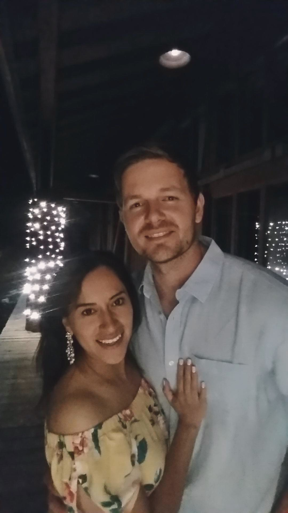

Liz Alejandra Albancando Robles | WDD130
Hello!My name is Liz Albancando and I am from Bogota, Colombia. I enjoy playing the piano, dancing and traveling.
Hello!My name is Liz Albancando and I am from Bogota, Colombia. I enjoy playing the piano, dancing and traveling.